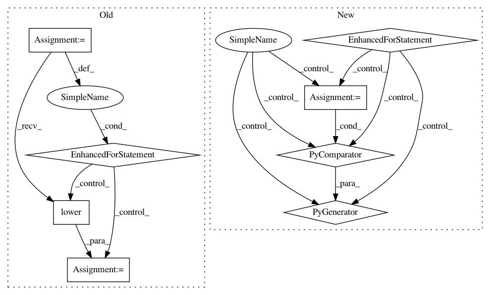

fe664e274814a75b56c2f8aeabcb1a51d8f5d4f0,scripts/train.py,Train,_set_timelapse,#Train#,62
Before Change
timelapse_output = str(get_folder(self._args.timelapse_output))
for folder in (self._args.timelapse_input_a, self._args.timelapse_input_b):
if folder is not None and not os.path.isdir(folder):
raise FaceswapError("The Timelapse path "{}" does not exist".format(folder))
exts = [os.path.splitext(fname)[-1].lower() for fname in os.listdir(folder)]
if not any(ext in _image_extensions for ext in exts):
raise FaceswapError("The Timelapse path "{}" does not contain any valid "
"images".format(folder))
kwargs = {"input_a": self._args.timelapse_input_a,
"input_b": self._args.timelapse_input_b,
"output": timelapse_output}
logger.debug("Timelapse enabled: %s", kwargs)
After Change
timelapse_output = str(get_folder(self._args.timelapse_output))
for side in ("a", "b"):
folder = getattr(self._args, "timelapse_input_{}".format(side))
if folder is not None and not os.path.isdir(folder):
raise FaceswapError("The Timelapse path "{}" does not exist".format(folder))
training_folder = getattr(self._args, "input_{}".format(side))
if folder == training_folder:
continue // Timelapse folder is training folder
filenames = [fname for fname in os.listdir(folder)
if os.path.splitext(fname)[-1].lower() in _image_extensions]
if not filenames:
raise FaceswapError("The Timelapse path "{}" does not contain any valid "
"images".format(folder))
// Timelapse images must appear in the training set, as we need access to alignment and
// mask info. Check filenames are there to save failing much later in the process.
training_images = [os.path.basename(img) for img in self._images[side]]
if not all(img in training_images for img in filenames):
raise FaceswapError("All images in the Timelapse folder "{}" must exist in the "
"training folder "{}"".format(folder, training_folder))
kwargs = {"input_a": self._args.timelapse_input_a,
"input_b": self._args.timelapse_input_b,
"output": timelapse_output}
logger.debug("Timelapse enabled: %s", kwargs)
In pattern: SUPERPATTERN
Frequency: 3
Non-data size: 8
Instances
Project Name: deepfakes/faceswap
Commit Name: fe664e274814a75b56c2f8aeabcb1a51d8f5d4f0
Time: 2020-10-09
Author: 36920800+torzdf@users.noreply.github.com
File Name: scripts/train.py
Class Name: Train
Method Name: _set_timelapse
Project Name: googledatalab/pydatalab
Commit Name: 5b48f9a9c097d26d395873044ceaa1a0b886682a
Time: 2017-06-14
Author: brandondutra@google.com
File Name: solutionbox/code_free_ml/mltoolbox/code_free_ml/analyze.py
Class Name:
Method Name: run_local_analysis
Project Name: deepfakes/faceswap
Commit Name: fe664e274814a75b56c2f8aeabcb1a51d8f5d4f0
Time: 2020-10-09
Author: 36920800+torzdf@users.noreply.github.com
File Name: scripts/train.py
Class Name: Train
Method Name: _set_timelapse
Project Name: googledatalab/pydatalab
Commit Name: 5b48f9a9c097d26d395873044ceaa1a0b886682a
Time: 2017-06-14
Author: brandondutra@google.com
File Name: solutionbox/code_free_ml/mltoolbox/code_free_ml/analyze.py
Class Name:
Method Name: run_cloud_analysis